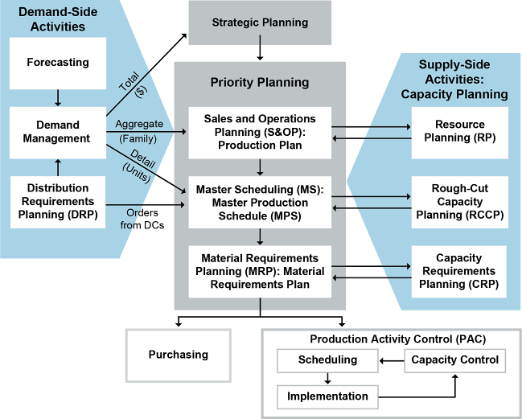
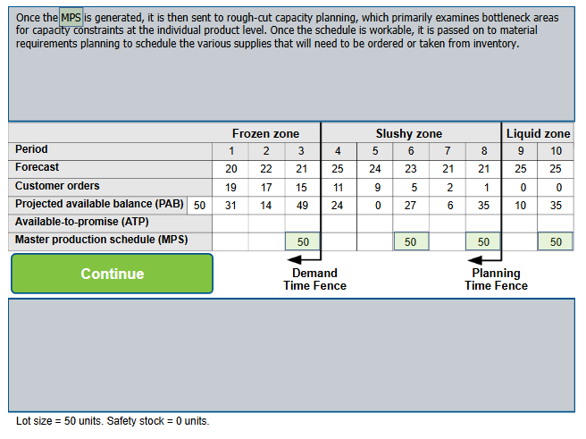
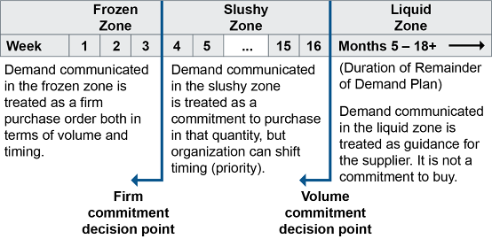

From a supply side, supply chain managers are most concerned with the sales and operations planning (S&OP) process, because it is how they ensure that supply and demand are balanced so supply chain processes can be consistent. However, it is important to place this process into its overall context, so this is presented first. After that, a master scheduling tool called the master scheduling grid is presented, including a discussion of time fences. The process can also be used for allocation of supply because a projected available balance and an available-to-promise amount can be determined.
Planning Operations Road Map
The manufacturing planning and control process is used to plan operations. A high-level view of the process is shown in Exhibit 4-1.
Exhibit 4-1: Manufacturing Planning and Control

The collaborative process of sales and operations planning is used to generate the production plan at the level of aggregate supply and demand. It determines production volumes for product families rather than individual products. This process reconciles the needs of demand (activities on the left side of the exhibit) with the needs of supply (the various levels of capacity checks on the right).
Master scheduling (MS) is then used to create a master production schedule (MPS) that will commit the company to produce specific products on particular dates. The master scheduling process, therefore, has to disaggregate the product family data into numbers of individual products based on inventory levels, forecasts, demand plans, order backlogs, orders from distribution centers (DCs) as part of distribution requirements planning (DRP), and other considerations used to decide what you need to produce and how much of each item to produce.
From there, material requirements planning (MRP) automatically calculates all of the various materials that will be needed to produce the units that are scheduled. This could then result in purchasing or drawing materials from inventory. In addition to purchasing, production execution involves production activity control, which is the detailed planning and scheduling of shop floor equipment and resources.
The aggregate production plan is checked against long-term capacity requirements using resource planning.
Rough-cut capacity planning at the master scheduling level verifies that the production targets are feasible.
Capacity requirements planning at the MRP level checks capacity in detail.
Capacity control at the execution level validates that each job has the resources needed to run the job.
Capacity issues can result in efforts to increase capacity to the degree feasible or in the master scheduler revising the plan if the load exceeds available capacity.
The master scheduling process is typically facilitated by IT such as an enterprise resources planning (ERP) system, which creates a master scheduling grid for calculating production based on these data.
Master Scheduling
After the collaborative process of sales and operations planning creates a unified forecast, after input from partners using CPFR® or an equivalent, and after input from DRP and other actual demand sources such as direct customer orders, master scheduling (MS) creates a master production schedule that will commit the company to produce specific products on particular dates.
a format that includes time periods (dates), the forecast, customer orders, projected available balance, available-to-promise, and the master production schedule. It takes into account the forecast; the production plan; and other important considerations such as backlog, availability of material, availability of capacity, and management policies and goals.
While the planning so far has worked only with aggregate supply and demand for product families, the master scheduling process disaggregates the product family data into specific units of individual products. Master scheduling considers current inventory levels, forecasts, demand plans, and order backlogs to decide how much of each item to produce. Master scheduling also determines weekly production dates based on the monthly projections in the production plan.
a part number selected to be planned by the master scheduler. The item is deemed critical in its impact on lower-level components or resources such as skilled labor, key machines, or dollars. Therefore, the master scheduler, not the computer, maintains the plan for these items. A master schedule item may be an end-item, a component, a pseudo number, or a planning bill of material.
Exhibit 4-2: Master Scheduling Grid

...changes inside the cumulative lead time become increasingly more difficult to a point where changes should be resisted.
Purposes of the MPS
By providing firm production dates and numbers, the MPS serves as a contract between sales and operations. Putting numbers to the mutual obligations implied by the MPS “contract” offers benefits to both sides:
For the sales force, the MPS provides assurance that they may make delivery commitments to customers based on the amount of product that will be available week by week.
For operations, the commitment of the sales force to meet its numbers provides assurance that they can avoid problems resulting from overproduction or an excess of orders. Those problems include layoffs and unused plant capacity in the case of overproduction and the need to expand capacity rapidly and temporarily when orders exceed capacity.
From the viewpoint of the company and the supply chain, the balance of supply and demand offers several potential benefits:
Low holding costs for inventory
Fewer stockouts that might back up customer orders, causing frustration and reduced loyalty
Efficient use of plant, labor, and equipment
Weekly Dates for Specific Products
Besides disaggregating the product families, master scheduling also determines weekly production dates based on the monthly projections in the production plan. Exhibit 4-4 shows what might happen to monthly S&OP numbers for a family of laser printers when the master scheduler disaggregates the projections into weekly production numbers for specific models.
Note that the exhibit shows production numbers only, not demand projections.
Exhibit 4-4: Disaggregation of Operations Plan Numbers into Weekly MPS
Commitment Decision Points
Two situations could frustrate buyer-supplier relationships when actual demand data and demand plans are shared:
When the supplier apparently does not use the demand information and has not developed sufficient capacity (or maintains too much capacity) despite being given time and motivation make the necessary changes
When the supplier builds sufficient capacity or inventory but the organization fails to order in that quantity because the plans overstate demand (or they understated demand and the supplier has insufficient capacity)
Since these problems affect both ends of the relationship, organizations that choose to collaborate should clearly set expectations and obligations in the form of a bilateral contract or trading partner agreement. Such agreements can specify how demand information will be communicated and what is expected of each organization in terms of building capacity or ordering what was requested. The agreement should specify development of formal processes to support the collaborative effort.
Such an agreement should specify when demand information represents a commitment to purchase goods or services and when it does not. This can be done using decision points similar to the time fences that are introduced elsewhere. Exhibit 4-5 shows how decision points could be used to create three zones of purchase commitment so that sellers can feel comfortable committing to produce the requested orders on schedule.
Exhibit 4-5: Use of Decision Points to Create Purchase Commitment Zones

In this example, the organization negotiates two decision points with a supplier: a firm commitment decision point and a volume commitment decision point. The firm commitment decision point is set three weeks out, and this creates a frozen zone where the buyer commits to communicate purchase orders and makes firm requests for delivery timing on specific days. The buyer and the supplier negotiate a second decision point at 16 weeks out, a volume commitment decision point, which creates a slushy zone before the point and a liquid zone after the point. Within the slushy zone, demand that is communicated is treated as an agreement to specify weekly quantities to deliver. The buyer can rearrange priorities or change timing of orders but must buy the specified quantity of goods or services during those weeks. The liquid zone is used to communicate updates to the demand plan over whatever remains of the demand plan’s planning horizon (five to 18 months in this example). Demand information communicated for these periods represents no contractual commitments for purchasing or production on the part of the buyer or the supplier.
If negotiations take this format, the subjects for negotiation will include where each decision point should be placed, based on the given industry, the supplier and buyer lead times, and the amount of flexibility or continuity each partner desires in the relationship. These negotiations should occur at the executive level with input from both organizations’ supply and demand professionals. This will ensure that the plan encompasses all technical requirements for order timing while getting top support for the agreement.
This type of agreement allows the organizations to have a long-term focus and provides some amount of stability for the buyer and the supplier and perceived fairness for both parties.
Time Fences for Material Requirements Planning
Time fences for material requirements planning (MRP)—basically, planning for components or subcomponents of a production unit—work similarly to those described for master scheduling, except that each planned component will have its own set of time fences. The purpose of using time fences in MRP is to ensure that materials needed for orders are committed to those orders and not used for other purposes. The planning time fence is usually set when the material is ordered or production is begun on the component; the demand time fence is usually set when the material is received or production of the component is complete.
the longest planned length of time to accomplish the activity in question. It is found by reviewing the lead time for each bill of material path below the item. Whichever path adds up to the greatest number defines cumulative lead time.
Complex products or services often have lengthy production or rollout cycles and thus multiple time fences. For example, a ship’s hull may have one set of time fences, its engines another, and the furnishings for the cabins could have another set much later in production than the first two.
Benefits of Time Fences
Time fences can help balance the need for a production system to maintain schedules and control costs against the need for it to be flexible. Costs for changes dramatically increase when nearing the final deadline of a time horizon. Rescheduling, additional setups, rerouting, expediting, overtime, and disrupted schedules for other items can all be direct costs of late changes, not to mention the toll it takes on the perceived reliability of the master production schedule and on customer service.
However, flexibility is needed because customers can cancel orders or request changes, equipment can experience failures or other capacity problems could occur, raw materials could be used at a higher rate than expected (e.g., scrap), or suppliers could fail to deliver goods on time.
The Japanese have a method of approaching root cause analysis called the “Five Whys,” because it is based on the theory that answering a question about causation five times will lead you through the false causes or symptoms to the real cause. Whether or not five is the magic number is less important than the underlying concept.
Exhibit 4-44: Scatter Diagram Showing Positive Correlation between Training and Job Performance
As seen in the exhibit, if you were to draw a diagonal line from the interior corner of the graph to the points in the upper right portion, it would be easy to see that the points are fairly close together and that they trend upward and to the right. This shows a positive correlation between the two variables, such as training and job performance, which means that an increase in y may be dependent upon an increase in x and therefore, if x can be controlled, there might also be a chance of influencing y. In other words, an increase in task competency could be linked to an increase in the number of hours of task training received by an employee in the supply chain. (If the points were more scattered but formed the same shape, there would be less positive correlation.) In another example, a scatter chart can be used for associative forecasting (such as regression analysis), in which case the independent variable is used to predict how the dependent variable should behave in the future.
As seen in Exhibit 4-45, each group of ideas is then given a descriptive title that encompasses the ideas below it. In this case, the challenge was trying to identify causes of product recall for a manufacturer. The group generated causes that fell into these six broad categories: inspection, customer feedback, product materials, frequency, costs, and return processes.
Continuous Improvement Methods Road Map
Value stream mapping is a paper-and-pencil tool that helps you to see and understand the flow of material and information as a product or service makes its way through the value stream. While it is similar to process mapping in six sigma, it tends to display a broader range of supply chain processes, stretching all the way from receiving raw material to delivering finished goods. Not only does a value stream map sketch all the steps in a production or service delivery process; it also includes the management and information systems that accompany the process.
One potential challenge to using the six-sigma approach arises from the difficulty of determining what constitutes a defect. Another challenge comes from setting a meaningful limit on variability. For instance, there is probably a range of wait times at the ATM that most customers will generally find acceptable. Is it 30 seconds, a minute, or two minutes? The project team leader, or the executive sponsoring the project, may be tempted to set the limits of variability as wide as possible to achieve a six-sigma level of defects. Also, not all opportunities are as significant as others. While some wait time is likely to be acceptable to customers, failure to record a deposit correctly or deliver the requested amount of cash may be completely unacceptable. (Defect, disappointment, and customer expectations are open to definition by focus group or other research methods.)
Customer. The definition of quality—that is, the acceptable rate of defects—is in the mind of the customer. Customer expectations might include outstanding performance, reliability, competitive price, on-time delivery, excellent service, and so on. All these areas provide opportunities for defects that may drive a customer to a competitor.
Process. Process mapping or flowcharting are techniques used to identify the unique steps in a process. When assessing a process, the company has to adopt the customer’s mindset—an “outside-in” view of the company’s performance. The goal is not only a low number of errors but also consistent performance. That is, the performance should remain very close to that number of errors and not show a great deal of variability in either direction. For instance, an air-freight carrier with on-time performance that stays right around an acceptable level may create more customer satisfaction than a carrier that has the same average on-time rate but is erratic and unpredictable, with late arrivals counterbalanced by early arrivals. This may produce enough disgruntled customers to erode market share.
Employee. Full employee participation has been a principle of quality systems since the early work of W. Edwards Deming. When it comes to customer satisfaction, there are no irrelevant employees (or processes). Bank tellers, receptionists, and file clerks (or data entry specialists) may occupy low rungs on the corporate ladder, but their “defects” tend to be highly annoying and visible to the customer. A company fully committed to the six-sigma approach will offer training at all levels. Six-sigma initiatives typically are directed from the top but implemented “from below,” by employee teams.
Phase 2: Measure existing performance, and commence recording data and facts that offer information about the underlying causes of the problem;
1) A quantity of materials awaiting further processing. It can refer to raw materials, semifinished stores or hold points, or a work backlog that is purposely maintained behind a work center. 2) In the theory of constraints, buffers can be time or material and support throughput and/or due date performance.
Click card to flip · Use arrows or shuffle to practise